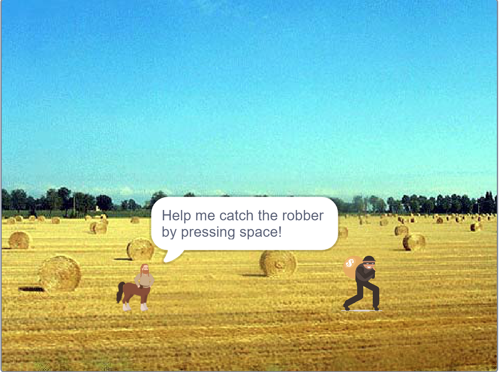

Home
Portfolio
About Me
This is my Portfolio Page!
Project 1
This is our Robot Jumping game. We made functions for jumping, moving forward, and moving backward. We also had a boulder that constantly moves left. If you collide with the boulder, you will lose. If you get to the end you will win. Then, you can press r and enter to reset the game.
Project 2

This is our Fireball game. We have two characters that can move left and right, jump, and shoot fireballs. The fireballs move directly horizontal and if your fireball hits the other person, you will get a point.
Project 3

This is our Robbery story. It features changing backgrounds, costumes, and music. You can also press space at one point to move the centaur and catch the robber.
Project 4

This is our Rover Phone Home Project. We had a column of data and had to split it into four columns. We then had to guess which columns represented the four sensors of a rover. It had sensors for temperature, sounds, winds, and light. We then compared our data with that of different environments and came to the conclusion that it was in the Desert Plains.
We thought that the sound was that graph since sound could be negative and it varied a lot. We thought that the graph for light matched with sunlight during the night and day. We thought that the motion graph matched with winds, which could vary with regularity. Lastly, we thought that temperature was that graph since it gradually went up and down.
We thought it was Desert Plains because the temperatures heated up quickly, the sounds from animals were constant and varied, the wind was constant and varied with regularity, and the light matched up with a night and day cycle.

Project 5

This is our Making Meaning From Data Project. We got data about honey production in every state over some years. We graphed the data using python and matplotlib. We did many different graphs, such as the averages and the total honey production for every year. We used lists, for statements, labels, legends, and math to graph our data.
Project 6
This is our 4.1.4 Simulation Project. Our simulation was on Hotelling's law. Two or more stores raise or lower prices and move around in order to maximize profit. The colors show which areas the store is making money from. If two stores are equally good, the consumer will randomely choose one. There are graphs showing the area that the stores are popular in, the prices that the stores have, and the revenue that the stores are making.